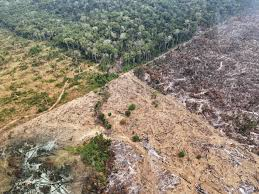

Loss of Biodiversity
<-Back to About Page

What is Biodiversity?
Biodiversity refers to the variety of living organisms found on Earth, including plants, animals, fungi, and microorganisms. It also includes the different ecosystems in which these organisms live. Biodiversity is essential for maintaining a healthy and balanced environment.
What is Loss of Biodiversity?
Loss of biodiversity occurs when species become extinct or when populations of plants and animals decline significantly. Human activities have accelerated biodiversity loss, making it one of the most serious environmental challenges facing the world today.
Major Causes of Biodiversity Loss
- Habitat destruction and deforestation
- Pollution of air, water, and soil
- Climate change and global warming
- Overhunting and overfishing
- Introduction of invasive species
- Urbanization and industrial development
Importance of Biodiversity
Biodiversity provides numerous benefits that support life on Earth. Every species plays an important role in maintaining ecological balance.
- Maintains ecosystem stability
- Provides food and medicine
- Supports agriculture and pollination
- Improves air and water quality
- Helps regulate climate
Effects of Biodiversity Loss
The decline of biodiversity can have serious consequences for both nature and human society.
- Disruption of food chains
- Loss of ecosystem balance
- Reduced agricultural productivity
- Increased vulnerability to natural disasters
- Loss of valuable plant and animal species
- Threats to human health and livelihoods
Threatened and Endangered Species
Many species around the world are at risk of extinction due to habitat destruction, pollution, and climate change.
- Tigers
- Elephants
- Rhinoceroses
- Sea Turtles
- Snow Leopards
- Various bird and amphibian species
How Can We Protect Biodiversity?
- Protect forests and natural habitats.
- Reduce pollution and waste.
- Support wildlife conservation programs.
- Prevent illegal hunting and poaching.
- Promote sustainable farming practices.
- Plant native trees and plants.
- Raise awareness about conservation.
What Students Can Do
- Learn about local wildlife and ecosystems.
- Participate in environmental campaigns.
- Avoid wasting natural resources.
- Support tree plantation activities.
- Spread awareness about endangered species.
Did You Know?
Scientists estimate that thousands of plant and animal species disappear every year. Protecting biodiversity helps ensure that future generations can enjoy a rich and healthy natural world.
Conclusion
Biodiversity is the foundation of life on Earth. Every living organism plays a role in maintaining ecological balance. By protecting habitats, conserving wildlife, and adopting sustainable practices, we can help preserve biodiversity and ensure a healthier future for all living beings.